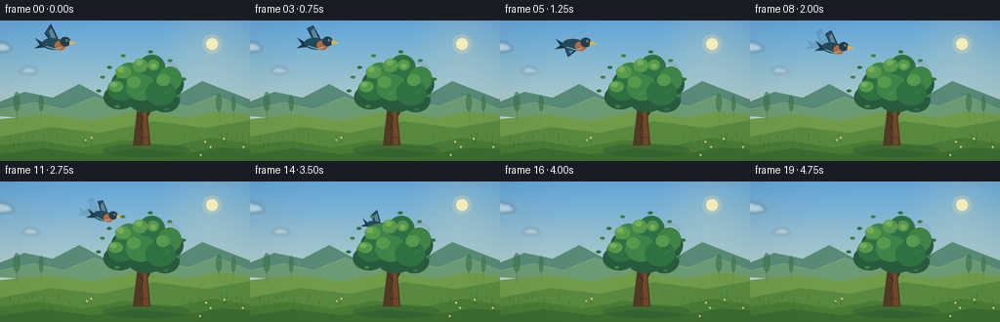
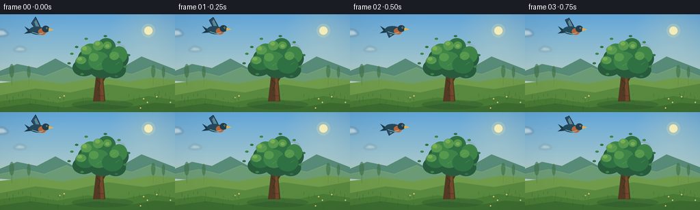
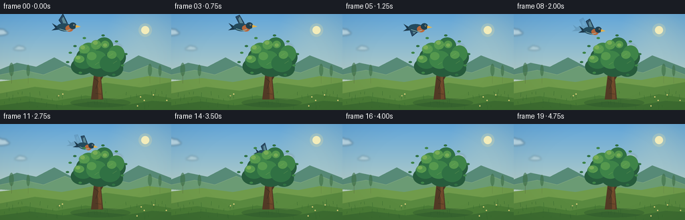
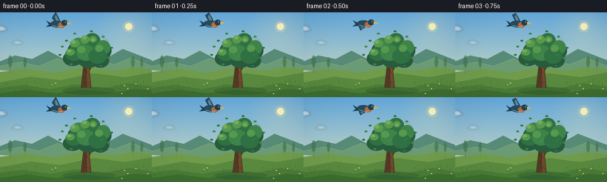

CODING AGENTS AS PIXEL WORLD MODELS
traex/GPT-5.6-Sol · dynamic_spatial_relationship_0047
点击播放 · 原生 RGB 像素
逐轮保存的候选
回放视频、检查图与代码变化。
每份候选均可单独播放。实际图片检查记录在下方工具轨迹中。
候选 01播放与检查图
点击播放 · 原生 RGB 像素


展开代码变化
--- 上一保存版本
+++ 本次保存版本
@@ -0,0 +1,221 @@
+from pathlib import Path
+import math
+import numpy as np
+from PIL import Image, ImageDraw, ImageFilter
+import artifact_io
+
+W, H, N = 256, 144, 20
+S = 4
+WW, HH = W*S, H*S
+
+
+def q(v):
+ if isinstance(v, (tuple, list)):
+ return tuple(int(round(x*S)) for x in v)
+ return int(round(v*S))
+
+
+def polygon(draw, pts, fill):
+ draw.polygon([(int(x*S), int(y*S)) for x,y in pts], fill=fill)
+
+
+def ellipse(draw, box, fill, outline=None, width=1):
+ draw.ellipse(q(box), fill=fill, outline=outline, width=max(1,int(width*S)))
+
+
+def line(draw, pts, fill, width=1, joint='curve'):
+ draw.line([(int(x*S),int(y*S)) for x,y in pts], fill=fill, width=max(1,int(width*S)), joint=joint)
+
+
+def make_sky(frame):
+ # A softly graded late-afternoon sky.
+ y = np.linspace(0, 1, HH)[:, None, None]
+ top = np.array([98, 166, 217], dtype=float)
+ bot = np.array([225, 227, 190], dtype=float)
+ arr = top[None,None,:]*(1-y) + bot[None,None,:]*y
+ arr = np.repeat(arr, WW, axis=1)
+ # subtle warm glow around sun
+ yy, xx = np.mgrid[0:HH,0:WW]
+ sx, sy = 217*S, 24*S
+ glow = np.clip(1-np.sqrt((xx-sx)**2+(yy-sy)**2)/(57*S),0,1)[...,None]
+ arr = arr*(1-.17*glow) + np.array([255,236,170])[None,None,:]*(.17*glow)
+ return Image.fromarray(np.uint8(np.clip(arr,0,255)), 'RGB')
+
+
+def draw_clouds(im, frame):
+ layer = Image.new('RGBA', (WW,HH), (0,0,0,0)); d=ImageDraw.Draw(layer)
+ drift = frame*0.23
+ clouds = [(-18+drift,25,0.78,115), (20+drift*.65,50,0.48,75), (162+drift*.4,47,0.52,85)]
+ for x,y,sc,a in clouds:
+ col=(255,255,245,a)
+ ellipse(d,(x,y,x+38*sc,y+9*sc),col)
+ ellipse(d,(x+8*sc,y-5*sc,x+26*sc,y+8*sc),col)
+ ellipse(d,(x+20*sc,y-3*sc,x+34*sc,y+8*sc),col)
+ layer=layer.filter(ImageFilter.GaussianBlur(q(1.5)))
+ im.paste(layer,(0,0),layer)
+
+
+def draw_background(im, frame):
+ d=ImageDraw.Draw(im,'RGBA')
+ # Sun and its halo
+ ellipse(d,(207,14,227,34),(255,237,155,50))
+ ellipse(d,(211,18,223,30),(255,244,187,225))
+ # distant soft ridges
+ polygon(d,[(0,94),(0,83),(25,73),(54,79),(81,65),(113,82),(143,68),(177,79),(207,62),(256,81),(256,110)],(87,138,119,255))
+ polygon(d,[(0,98),(0,91),(35,84),(65,91),(97,78),(128,91),(163,82),(193,88),(221,77),(256,91),(256,116)],(107,155,116,255))
+ # light atmospheric ridge edges
+ line(d,[(0,91),(35,84),(65,91),(97,78),(128,91),(163,82),(193,88),(221,77),(256,91)],(188,204,155,95),.8)
+ # meadow base
+ polygon(d,[(0,101),(46,96),(92,102),(141,93),(190,99),(222,93),(256,97),(256,144),(0,144)],(112,155,75,255))
+ polygon(d,[(0,119),(52,109),(102,115),(158,103),(210,110),(256,102),(256,144),(0,144)],(89,137,63,255))
+ # distant tree marks
+ for x,scale in [(17,.45),(42,.3),(224,.38),(239,.28)]:
+ ellipse(d,(x-8*scale,82-20*scale,x+8*scale,93),(64,113,73,160))
+ line(d,[(x,89),(x,104)],(82,87,54,150),1.2*scale)
+ # foreground grass ribbons
+ polygon(d,[(0,128),(39,123),(84,130),(128,122),(173,129),(217,120),(256,126),(256,144),(0,144)],(74,124,54,255))
+ polygon(d,[(0,137),(45,131),(94,137),(139,131),(191,136),(227,130),(256,132),(256,144),(0,144)],(61,109,49,255))
+ # tiny field flowers and grass; deterministic, slightly animated blades
+ rng=np.random.default_rng(804)
+ for i in range(55):
+ x=float(rng.uniform(1,255)); base=float(rng.uniform(117,145)); h=float(rng.uniform(2,7))
+ sway=math.sin(frame*.27+i)*.5
+ line(d,[(x,base),(x+sway,base-h)],(47,98,44,180),.5)
+ if i%9==0:
+ ellipse(d,(x+sway-1,base-h-1,x+sway+1,base-h+1),(245,221,132,210))
+
+
+def bird_pose(frame):
+ if frame <= 5:
+ x = 57 + frame*4.2
+ y = 22.5 - 1.0*math.sin(frame*.9)
+ u = 0.0
+ else:
+ u=(frame-5)/14.0
+ e=u*u*(3-2*u)
+ x=78 + 75*e
+ y=23 + 44*(u**1.22) - 4.5*math.sin(math.pi*u)
+ scale=1.08-.36*u
+ angle=4+18*u
+ return x,y,scale,angle
+
+
+def make_bird(frame, scale, angle, alpha=255):
+ # Draw side-on flying bird large, then scale and rotate for a clean silhouette.
+ bw,bh=46*S,38*S
+ layer=Image.new('RGBA',(bw,bh),(0,0,0,0)); d=ImageDraw.Draw(layer)
+ cx,cy=22,20
+ flap=math.sin(frame*math.pi*.78)
+ # wings: high on one phase and stretched down on the other
+ if flap>=0:
+ wing=[(20,20),(12,11-5*flap),(17,2+2*flap),(24,14),(27,20)]
+ hi=[(19,16),(16,9),(18,6),(23,15)]
+ else:
+ wing=[(21,18),(12,23),(16,33+2*flap),(24,25),(28,20)]
+ hi=[(20,21),(16,25),(18,29),(24,23)]
+ polygon(d,wing,(45,78,104,alpha))
+ line(d,wing+[(20,20)],(24,50,70,alpha),.8)
+ polygon(d,hi,(92,137,151,alpha))
+ # forked tail and body
+ polygon(d,[(11,20),(3,16),(8,22),(3,26),(14,24)],(28,57,75,alpha))
+ ellipse(d,(10,15,32,26),(36,74,92,alpha))
+ # warm chest, head and eye
+ ellipse(d,(22,17,33,26),(181,103,60,alpha))
+ ellipse(d,(27,13,37,22),(31,63,79,alpha))
+ polygon(d,[(36,16),(43,18),(36,20)],(231,174,66,alpha))
+ ellipse(d,(32.5,15.3,34.5,17.3),(250,244,208,alpha))
+ ellipse(d,(33.1,15.7,34.2,16.8),(16,20,19,alpha))
+ # lower body highlight
+ line(d,[(14,23),(23,25),(29,23)],(148,191,188,alpha),1)
+ # resize/rotate; retain generous margins
+ if scale != 1:
+ layer=layer.resize((max(1,int(bw*scale)),max(1,int(bh*scale))),Image.Resampling.LANCZOS)
+ layer=layer.rotate(-angle,resample=Image.Resampling.BICUBIC,expand=True)
+ return layer
+
+
+def paste_bird(im, frame, behind=False):
+ x,y,scale,angle=bird_pose(frame)
+ bird=make_bird(frame,scale,angle)
+ # very subtle displaced translucent echo during fastest travel, suggesting speed
+ if 7 <= frame <= 12:
+ ghost=make_bird(frame,scale*.98,angle,alpha=40)
+ pos=(int((x-10)*S-ghost.width/2),int((y-2)*S-ghost.height/2))
+ im.paste(ghost,pos,ghost)
+ pos=(int(x*S-bird.width/2),int(y*S-bird.height/2))
+ im.paste(bird,pos,bird)
+
+
+def draw_tree(im, frame):
+ d=ImageDraw.Draw(im,'RGBA')
+ sway=math.sin(frame*.32)*.7
+ # cast shadow grounds the tree
+ ellipse(d,(105,126,195,140),(38,75,42,75))
+ # trunk silhouette, tapering and branching
+ polygon(d,[(136,128),(142,77),(149,75),(154,128)],(82,58,37,255))
+ polygon(d,[(141,91),(126,72),(129,69),(146,84)],(88,62,38,255))
+ polygon(d,[(148,91),(165,68),(168,70),(151,99)],(76,54,35,255))
+ polygon(d,[(143,80),(140,58),(144,57),(150,83)],(77,54,35,255))
+ # trunk warm lit edge and bark marks
+ polygon(d,[(146,80),(149,79),(152,127),(147,128)],(116,75,43,210))
+ line(d,[(141,96),(147,101),(143,112)],(53,43,30,170),1)
+ line(d,[(150,91),(146,107),(151,117)],(153,99,54,115),.8)
+ line(d,[(143,119),(151,120)],(50,40,28,130),1)
+ # canopy made from overlapping lobes. Back/dark masses first.
+ dark=(39,91,60,255); mid=(48,113,67,255); green=(62,132,72,255)
+ lobes=[(114+sway,51,144+sway,78),(136+sway,39,169+sway,73),
+ (156+sway,50,188+sway,80),(106+sway,66,139+sway,91),
+ (130+sway,64,169+sway,94),(154+sway,69,184+sway,94)]
+ for b in lobes: ellipse(d,b,dark)
+ # mid layer varies slightly, creating living edges
+ mids=[(119+sway,43,146+sway,69),(142+sway,35,169+sway,61),
+ (162+sway,47,186+sway,72),(110+sway,59,139+sway,82),
+ (129+sway,55,160+sway,82),(149+sway,61,180+sway,87)]
+ for j,b in enumerate(mids): ellipse(d,b,mid if j%2 else green)
+ # clusters on lit upper-left side
+ light=(88,155,78,235); sun=(128,177,88,210)
+ for b in [(118+sway,46,134+sway,59),(136+sway,39,151+sway,53),
+ (151+sway,40,163+sway,51),(111+sway,62,126+sway,73),
+ (130+sway,57,144+sway,69),(160+sway,55,174+sway,67)]:
+ ellipse(d,b,light)
+ for b in [(120+sway,47,127+sway,53),(139+sway,40,146+sway,46),
+ (113+sway,63,120+sway,68),(154+sway,44,160+sway,49)]:
+ ellipse(d,b,sun)
+ # crisp scattered leaves around silhouette improve detail
+ leaves=[(105,58),(112,48),(126,36),(154,32),(174,41),(188,60),(183,77),(170,91),(120,88),(101,72)]
+ for j,(x,y) in enumerate(leaves):
+ dx=sway*(.5+(j%3)*.15)
+ ellipse(d,(x+dx-2.5,y-1.5,x+dx+2.5,y+1.5), mid if j%2 else green)
+ # a few foreground leaf veins/highlights
+ for x,y in [(128,52),(148,47),(166,61),(122,71),(145,74),(172,72)]:
+ line(d,[(x+sway-3,y+2),(x+sway+3,y-2)],(171,195,102,95),.6)
+
+
+def make_frame(frame):
+ im=make_sky(frame)
+ draw_clouds(im,frame)
+ draw_background(im,frame)
+ # Bird passes from open sky to the far side of the tree. It is inserted
+ # before the tree from frame 9 onward, so foliage progressively occludes it.
+ if frame >= 9:
+ paste_bird(im,frame,behind=True)
+ draw_tree(im,frame)
+ if frame < 9:
+ paste_bird(im,frame,behind=False)
+ # Foreground vignette adds depth while keeping the action bright.
+ arr=np.asarray(im.convert('RGB'),dtype=np.float32)
+ yy,xx=np.mgrid[0:HH,0:WW]
+ r=((xx-WW*.52)/(WW*.75))**2+((yy-HH*.48)/(HH*.9))**2
+ vig=np.clip(1-.085*np.maximum(r-.22,0),.88,1)[...,None]
+ arr=np.clip(arr*vig,0,255).astype(np.uint8)
+ im=Image.fromarray(arr).resize((W,H),Image.Resampling.LANCZOS)
+ return np.asarray(im,dtype=np.uint8)
+
+
+def main():
+ frames=np.stack([make_frame(i) for i in range(N)],axis=0)
+ artifact_io.save(frames,Path(__file__).resolve().parent)
+
+
+if __name__=='__main__':
+ main()
候选 02播放与检查图
点击播放 · 原生 RGB 像素


展开代码变化
--- 上一保存版本
+++ 本次保存版本
@@ -39,7 +39,7 @@
sx, sy = 217*S, 24*S
glow = np.clip(1-np.sqrt((xx-sx)**2+(yy-sy)**2)/(57*S),0,1)[...,None]
arr = arr*(1-.17*glow) + np.array([255,236,170])[None,None,:]*(.17*glow)
- return Image.fromarray(np.uint8(np.clip(arr,0,255)), 'RGB')
+ return Image.fromarray(np.uint8(np.clip(arr,0,255)))
def draw_clouds(im, frame):
@@ -87,14 +87,14 @@
def bird_pose(frame):
if frame <= 5:
- x = 57 + frame*4.2
- y = 22.5 - 1.0*math.sin(frame*.9)
+ x = 99 + frame*2.7
+ y = 18.5 - 0.8*math.sin(frame*.9)
u = 0.0
else:
u=(frame-5)/14.0
e=u*u*(3-2*u)
- x=78 + 75*e
- y=23 + 44*(u**1.22) - 4.5*math.sin(math.pi*u)
+ x=112.5 + 40.5*e
+ y=19 + 48*(u**1.22) - 4.0*math.sin(math.pi*u)
scale=1.08-.36*u
angle=4+18*u
return x,y,scale,angle
可观测工具轨迹
实际执行的命令与返回图片。
命令 1exit 0
/bin/bash -lc "cat prompt.txt && printf '\\n---RULES---\\n' && cat GENERATION_RULES.md && printf '\\n---SPEC---\\n' && cat task_spec.json"
命令 2exit 0
/bin/bash -lc "find . -maxdepth 2 -type f -printf '%p\\n' | sort && printf '\\nTOOLS\\n' && command -v ffmpeg || true && command -v python3 || true"
命令 3exit 0
/bin/bash -lc 'cat artifact_io.py'
命令 4exit 1
/bin/bash -lc "cat > generate.py <<'PY'
from pathlib import Path
import math
import numpy as np
from PIL import Image, ImageDraw, ImageFilter
import artifact_io
W, H, N = 256, 144, 20
S = 4
WW, HH = W*S, H*S
def q(v):
if isinstance(v, (tuple, list)):
return tuple(int(round(x*S)) for x in v)
return int(round(v*S))
def polygon(draw, pts, fill):
draw.polygon([(int(x*S), int(y*S)) for x,y in pts], fill=fill)
def ellipse(draw, box, fill, outline=None, width=1):
draw.ellipse(q(box), fill=fill, outline=outline, width=max(1,int(width*S)))
def line(draw, pts, fill, width=1, joint='curve'):
draw.line([(int(x*S),int(y*S)) for x,y in pts], fill=fill, width=max(1,int(width*S)), joint=joint)
def make_sky(frame):
# A softly graded late-afternoon sky.
y = np.linspace(0, 1, HH)[:, None, None]
top = np.array([98, 166, 217], dtype=float)
bot = np.array([225, 227, 190], dtype=float)
arr = top[None,None,:]*(1-y) + bot[None,None,:]*y
arr = np.repeat(arr, WW, axis=1)
# subtle warm glow around sun
yy, xx = np.mgrid[0:HH,0:WW]
sx, sy = 217*S, 24*S
glow = np.clip(1-np.sqrt((xx-sx)**2+(yy-sy)**2)/(57*S),0,1)[...,None]
arr = arr*(1-.17*glow) + np.array([255,236,170])[None,None,:]*(.17*glow)
return Image.fromarray(np.uint8(np.clip(arr,0,255)), 'RGB')
def draw_clouds(im, frame):
layer = Image.new('RGBA', (WW,HH), (0,0,0,0)); d=ImageDraw.Draw(layer)
drift = frame*0.23
clouds = [(-18+drift,25,0.78,115), (20+drift*.65,50,0.48,75), (162+drift*.4,47,0.52,85)]
for x,y,sc,a in clouds:
col=(255,255,245,a)
ellipse(d,(x,y,x+38*sc,y+9*sc),col)
ellipse(d,(x+8*sc,y-5*sc,x+26*sc,y+8*sc),col)
ellipse(d,(x+20*sc,y-3*sc,x+34*sc,y+8*sc),col)
layer=layer.filter(ImageFilter.GaussianBlur(q(1.5)))
im.paste(layer,(0,0),layer)
def draw_background(im, frame):
d=ImageDraw.Draw(im,'RGBA')
# Sun and its halo
ellipse(d,(207,14,227,34),(255,237,155,50))
ellipse(d,(211,18,223,30),(255,244,187,225))
# distant soft ridges
polygon(d,[(0,94),(0,83),(25,73),(54,79),(81,65),(113,82),(143,68),(177,79),(207,62),(256,81),(256,110)],(87,138,119,255))
polygon(d,[(0,98),(0,91),(35,84),(65,91),(97,78),(128,91),(163,82),(193,88),(221,77),(256,91),(256,116)],(107,155,116,255))
# light atmospheric ridge edges
line(d,[(0,91),(35,84),(65,91),(97,78),(128,91),(163,82),(193,88),(221,77),(256,91)],(188,204,155,95),.8)
# meadow base
polygon(d,[(0,101),(46,96),(92,102),(141,93),(190,99),(222,93),(256,97),(256,144),(0,144)],(112,155,75,255))
polygon(d,[(0,119),(52,109),(102,115),(158,103),(210,110),(256,102),(256,144),(0,144)],(89,137,63,255))
# distant tree marks
for x,scale in [(17,.45),(42,.3),(224,.38),(239,.28)]:
ellipse(d,(x-8*scale,82-20*scale,x+8*scale,93),(64,113,73,160))
line(d,[(x,89),(x,104)],(82,87,54,150),1.2*scale)
# foreground grass ribbons
polygon(d,[(0,128),(39,123),(84,130),(128,122),(173,129),(217,120),(256,126),(256,144),(0,144)],(74,124,54,255))
polygon(d,[(0,137),(45,131),(94,137),(139,131),(191,136),(227,130),(256,132),(256,144),(0,144)],(61,109,49,255))
# tiny field flowers and grass; deterministic, slightly animated blades
rng=np.random.default_rng(804)
for i in range(55):
x=float(rng.uniform(1,255)); base=float(rng.uniform(117,145)); h=float(rng.uniform(2,7))
sway=math.sin(frame*.27+i)*.5
line(d,[(x,base),(x+sway,base-h)],(47,98,44,180),.5)
if i%9==0:
ellipse(d,(x+sway-1,base-h-1,x+sway+1,base-h+1),(245,221,132,210))
def bird_pose(frame):
if frame <= 5:
x = 57 + frame*4.2
y = 22.5 - 1.0*math.sin(frame*.9)
u = 0.0
else:
u=(frame-5)/14.0
e=u*u*(3-2*u)
x=78 + 75*e
y=23 + 44*(u**1.22) - 4.5*math.sin(math.pi*u)
scale=1.08-.36*u
angle=4+18*u
return x,y,scale,angle
def make_bird(frame, scale, angle, alpha=255):
# Draw side-on flying bird large, then scale and rotate for a clean silhouette.
bw,bh=46*S,38*S
layer=Image.new('RGBA',(bw,bh),(0,0,0,0)); d=ImageDraw.Draw(layer)
cx,cy=22,20
flap=math.sin(frame*math.pi*.78)
# wings: high on one phase and stretched down on the other
if flap>=0:
wing=[(20,20),(12,11-5*flap),(17,2+2*flap),(24,14),(27,20)]
hi=[(19,16),(16,9),(18,6),(23,15)]
else:
wing=[(21,18),(12,23),(16,33+2*flap),(24,25),(28,20)]
hi=[(20,21),(16,25),(18,29),(24,23)]
polygon(d,wing,(45,78,104,alpha))
line(d,wing+[(20,20)],(24,50,70,alpha),.8)
polygon(d,hi,(92,137,151,alpha))
# forked tail and body
polygon(d,[(11,20),(3,16),(8,22),(3,26),(14,24)],(28,57,75,alpha))
ellipse(d,(10,15,32,26),(36,74,92,alpha))
# warm chest, head and eye
ellipse(d,(22,17,33,26),(181,103,60,alpha))
ellipse(d,(27,13,37,22),(31,63,79,alpha))
polygon(d,[(36,16),(43,18),(36,20)],(231,174,66,alpha))
ellipse(d,(32.5,15.3,34.5,17.3),(250,244,208,alpha))
ellipse(d,(33.1,15.7,34.2,16.8),(16,20,19,alpha))
# lower body highlight
line(d,[(14,23),(23,25),(29,23)],(148,191,188,alpha),1)
# resize/rotate; retain generous margins
if scale "'!= 1:
layer=layer.resize((max(1,int(bw*scale)),max(1,int(bh*scale))),Image.Resampling.LANCZOS)
layer=layer.rotate(-angle,resample=Image.Resampling.BICUBIC,expand=True)
return layer
def paste_bird(im, frame, behind=False):
x,y,scale,angle=bird_pose(frame)
bird=make_bird(frame,scale,angle)
# very subtle displaced translucent echo during fastest travel, suggesting speed
if 7 <= frame <= 12:
ghost=make_bird(frame,scale*.98,angle,alpha=40)
pos=(int((x-10)*S-ghost.width/2),int((y-2)*S-ghost.height/2))
im.paste(ghost,pos,ghost)
pos=(int(x*S-bird.width/2),int(y*S-bird.height/2))
im.paste(bird,pos,bird)
def draw_tree(im, frame):
d=ImageDraw.Draw(im,'"'RGBA')
sway=math.sin(frame*.32)*.7
# cast shadow grounds the tree
ellipse(d,(105,126,195,140),(38,75,42,75))
# trunk silhouette, tapering and branching
polygon(d,[(136,128),(142,77),(149,75),(154,128)],(82,58,37,255))
polygon(d,[(141,91),(126,72),(129,69),(146,84)],(88,62,38,255))
polygon(d,[(148,91),(165,68),(168,70),(151,99)],(76,54,35,255))
polygon(d,[(143,80),(140,58),(144,57),(150,83)],(77,54,35,255))
# trunk warm lit edge and bark marks
polygon(d,[(146,80),(149,79),(152,127),(147,128)],(116,75,43,210))
line(d,[(141,96),(147,101),(143,112)],(53,43,30,170),1)
line(d,[(150,91),(146,107),(151,117)],(153,99,54,115),.8)
line(d,[(143,119),(151,120)],(50,40,28,130),1)
# canopy made from overlapping lobes. Back/dark masses first.
dark=(39,91,60,255); mid=(48,113,67,255); green=(62,132,72,255)
lobes=[(114+sway,51,144+sway,78,dark),(136+sway,39,169+sway,73,dark),
(156+sway,50,188+sway,80,dark),(106+sway,66,139+sway,91,dark),
(130+sway,64,169+sway,94,dark),(154+sway,69,184+sway,94,dark)]
for b in lobes: ellipse(d,b,dark)
# mid layer varies slightly, creating living edges
mids=[(119+sway,43,146+sway,69),(142+sway,35,169+sway,61),
(162+sway,47,186+sway,72),(110+sway,59,139+sway,82),
(129+sway,55,160+sway,82),(149+sway,61,180+sway,87)]
for j,b in enumerate(mids): ellipse(d,b,mid if j%2 else green)
# clusters on lit upper-left side
light=(88,155,78,235); sun=(128,177,88,210)
for b in [(118+sway,46,134+sway,59),(136+sway,39,151+sway,53),
(151+sway,40,163+sway,51),(111+sway,62,126+sway,73),
(130+sway,57,144+sway,69),(160+sway,55,174+sway,67)]:
ellipse(d,b,light)
for b in [(120+sway,47,127+sway,53),(139+sway,40,146+sway,46),
(113+sway,63,120+sway,68),(154+sway,44,160+sway,49)]:
ellipse(d,b,sun)
# crisp scattered leaves around silhouette improve detail
leaves=[(105,58),(112,48),(126,36),(154,32),(174,41),(188,60),(183,77),(170,91),(120,88),(101,72)]
for j,(x,y) in enumerate(leaves):
dx=sway*(.5+(j%3)*.15)
ellipse(d,(x+dx-2.5,y-1.5,x+dx+2.5,y+1.5), mid if j%2 else green)
# a few foreground leaf veins/highlights
for x,y in [(128,52),(148,47),(166,61),(122,71),(145,74),(172,72)]:
line(d,[(x+sway-3,y+2),(x+sway+3,y-2)],(171,195,102,95),.6)
def make_frame(frame):
im=make_sky(frame)
draw_clouds(im,frame)
draw_background(im,frame)
# Bird passes from open sky to the far side of the tree. It is inserted
# before the tree from frame 9 onward, so foliage progressively occludes it.
if frame >= 9:
paste_bird(im,frame,behind=True)
draw_tree(im,frame)
if frame < 9:
paste_bird(im,frame,behind=False)
# Foreground vignette adds depth while keeping the action bright.
arr=np.asarray(im.convert('RGB'),dtype=np.float32)
yy,xx=np.mgrid[0:HH,0:WW]
r=((xx-WW*.52)/(WW*.75))**2+((yy-HH*.48)/(HH*.9))**2
vig=np.clip(1-.085*np.maximum(r-.22,0),.88,1)[...,None]
arr=np.clip(arr*vig,0,255).astype(np.uint8)
im=Image.fromarray(arr).resize((W,H),Image.Resampling.LANCZOS)
return np.asarray(im,dtype=np.uint8)
def main():
frames=np.stack([make_frame(i) for i in range(N)],axis=0)
artifact_io.save(frames,Path(__file__).resolve().parent)
if __name__=='__main__':
main()
PY
python3 generate.py
python3 - <<'PY'
from PIL import Image
import numpy as np
z=np.load('pixels.npz')['pixels']
print(z.shape,z.dtype, hex(int(z[0,0,0])))
print(Image.open('inspection.png').size)
PY"命令 5exit 0
/bin/bash -lc "nl -ba generate.py | sed -n '155,185p'"
命令 6exit 1
/bin/bash -lc "python3 - <<'PY'
p='generate.py'
s=open(p).read().replace('(114+sway,51,144+sway,78,dark)', '(114+sway,51,144+sway,78)')
open(p,'w').write(s)
PY
python3 generate.py
python3 - <<'PY'
from PIL import Image
import numpy as np
z=np.load('pixels.npz')['pixels']
print('pixels',z.shape,z.dtype,'inspection',Image.open('inspection.png').size)
# frame differences
ims=np.stack([np.asarray(Image.open(f'frames/{i:02d}.png')) for i in range(20)])
print('frames',ims.shape,ims.dtype,'mean diffs',[round(float(np.abs(ims[i].astype(int)-ims[i-1]).mean()),2) for i in range(1,20)])
PY"命令 7exit 0
/bin/bash -lc "sed -n '164,170p' generate.py && grep -n 'dark)' generate.py"
命令 8exit 0
/bin/bash -lc "python3 - <<'PY'
p='generate.py';s=open(p).read();s=s.replace(',73,dark)', ',73)').replace(',80,dark)', ',80)').replace(',91,dark)', ',91)').replace(',94,dark)', ',94)');open(p,'w').write(s)
PY
python3 generate.py
python3 - <<'PY'
from PIL import Image
import numpy as np
z=np.load('pixels.npz')['pixels']
print('pixels',z.shape,z.dtype,'inspection',Image.open('inspection.png').size)
ims=np.stack([np.asarray(Image.open(f'frames/{i:02d}.png')) for i in range(20)])
print('frames',ims.shape,ims.dtype,'range',ims.min(),ims.max())
print('mean diffs',[round(float(np.abs(ims[i].astype(int)-ims[i-1]).mean()),2) for i in range(1,20)])
PY"命令 9exit 0
/bin/bash -lc "python3 - <<'PY'
p='generate.py'; s=open(p).read()
s=s.replace(\"return Image.fromarray(np.uint8(np.clip(arr,0,255)), 'RGB')\", \"return Image.fromarray(np.uint8(np.clip(arr,0,255)))\")
s=s.replace(\"x = 57 + frame*4.2\\n y = 22.5 - 1.0*math.sin(frame*.9)\", \"x = 99 + frame*2.7\\n y = 18.5 - 0.8*math.sin(frame*.9)\")
s=s.replace(\"x=78 + 75*e\\n y=23 + 44*(u**1.22) - 4.5*math.sin(math.pi*u)\", \"x=112.5 + 40.5*e\\n y=19 + 48*(u**1.22) - 4.0*math.sin(math.pi*u)\")
open(p,'w').write(s)
PY
python3 generate.py
python3 - <<'PY'
from pathlib import Path
from PIL import Image
import numpy as np
frames=np.stack([np.asarray(Image.open(f'frames/{i:02d}.png')) for i in range(20)])
assert frames.shape==(20,144,256,3) and frames.dtype==np.uint8
z=np.load('pixels.npz')['pixels']
assert z.shape==(144,256,20) and z.dtype==np.uint32
assert Path('index.html').stat().st_size>1000
print('validated:',frames.shape,frames.dtype,'pixels:',z.shape,'artifacts:',len(list(Path('frames').glob('*.png'))))
print('sizes:',{p:Path(p).stat().st_size for p in ['pixels.npz','inspection.png','transition_check.png','index.html','generate.py']})
PY
git status --short 2>/dev/null || true"保存候选 2 份；完成命令 9 次；可验证图片返回 0 张。原始 API 响应与完整日志保留在本地。